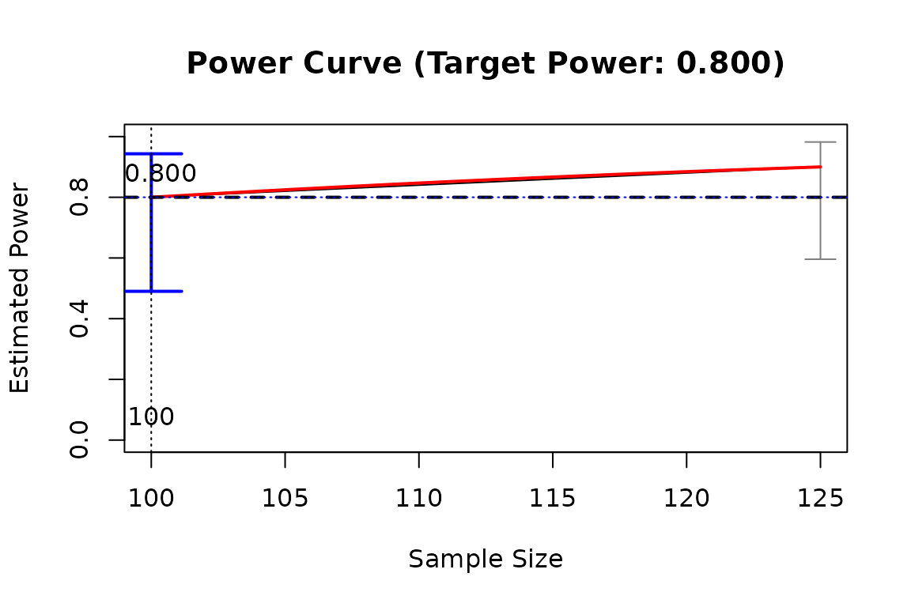

It plots the results of 'x_from_power', such as the estimated power against sample size.
Usage
# S3 method for class 'x_from_power'
plot(
x,
what = c("ci", "power_curve", "final_x", "final_power", "target_power"),
text_what = c("final_x", "final_power"),
digits = 3,
main = paste0("Power Curve ", "(Target Power: ", formatC(x$target_power, digits =
digits, format = "f"), ")"),
xlab = NULL,
ylab = "Estimated Power",
pars_ci = list(),
pars_power_curve = list(),
pars_ci_final_x = list(lwd = 2, length = 0.2, col = "blue"),
pars_target_power = list(lty = "dotted"),
pars_final_x = list(lty = "dotted"),
pars_final_power = list(lty = "dotted", col = "blue"),
pars_text_final_x = list(y = 0, pos = 3, cex = 1),
pars_text_final_power = list(pos = 3, cex = 1),
...
)Arguments
- x
An
x_from_powerobject, the output ofx_from_power().- what
A character vector of what to include in the plot. Possible values are
"ci"(confidence intervals for the estimated value of the predictor),"power_curve"(the crude power curve, if available),"final_x"(a vertical line for the value of the predictor with estimated power close enough to the target power by confidence interval),"final_power"(a horizontal line for the estimated power of the final value of the predictor), and"target_power"(a horizontal line for the target power). By default, all these elements will be plotted.- text_what
A character vector of what numbers to be added as labels. Possible values are
"final_x"(the value of the predictor with estimated power close enough to the target power by confidence interval) and"final_power"(the estimated power of the final value of the predictor). By default, all these labels will be added.- digits
The number of digits after the decimal that will be used when adding numbers.
- main
The title of the plot.
- xlab, ylab
The labels for the horizontal and vertical axes, respectively.
- pars_ci
A named list of arguments to be passed to
arrows()to customize the drawing of the confidence intervals.- pars_power_curve
A named list of arguments to be passed to
points()to customize the drawing of the power curve.- pars_ci_final_x
A named list of arguments to be passed to
arrows()to customize the drawing of the confidence interval of the final value of the predictor.- pars_target_power
A named list of arguments to be passed to
abline()when drawing the horizontal line for the target power.- pars_final_x
A named list of arguments to be passed to
abline()when drawing the vertical line for the final value of the predictor.- pars_final_power
A named list of arguments to be passed to
abline()when drawing the horizontal line for the estimated power at the final value of the predictor.- pars_text_final_x
A named list of arguments to be passed to
text()when adding the label for the final value of the predictor.- pars_text_final_power
A named list of arguments to be passed to
text()when adding the label for the estimated power of final value of the predictor.- ...
Optional arguments. Passed to
plot()when drawing the estimated power against the predictor.
Details
It currently plots the relation
between estimated power and
the values examined by x_from_power().
Other elements
can be requested (see the argument
what), and they can be customized
individually.
Examples
# Specify the population model
mod <-
"
m ~ x
y ~ m + x
"
# Specify the population values
mod_es <-
"
m ~ x: m
y ~ m: l
y ~ x: n
"
# Generate the datasets
sim_only <- power4test(nrep = 10,
model = mod,
pop_es = mod_es,
n = 100,
do_the_test = FALSE,
iseed = 1234)
#> Displaying progress enabled. Set 'progress = FALSE' to hide the progress.
#> Simulate the data:
#> Fit the model(s):
# Do a test
test_out <- power4test(object = sim_only,
test_fun = test_parameters,
test_args = list(pars = "m~x"))
#> Displaying progress enabled. Set 'progress = FALSE' to hide the progress.
#> Do the test: test_parameters: CIs (pars: m~x)
# Determine the sample size with a power of .80 (default)
power_vs_n <- x_from_power(test_out,
x = "n",
progress = TRUE,
target_power = .80,
final_nrep = 10,
xs_per_trial = 1,
nrep_steps = 1,
max_trials = 1,
seed = 2345)
#>
#> --- Pre-iteration Search ---
#>
#> - Start at 2025-06-04 16:15:09
#> - Value(s) to try: 125
#>
#> Updating the simulation for sample size: 125
#> Displaying progress enabled. Set 'progress = FALSE' to hide the progress.
#> Re-simulate the data:
#> Fit the model(s):
#> Generate Monte Carlo estimates:
#> Update the test(s):
#> Update test_parameters: CIs (pars: m~x) :
#> - Rejection Rates:
#> n test test_label p.v reject r.cilo r.cihi
#> 1 100 test_parameters: CIs (pars: m~x) m~x 1.000 0.800 0.552 1.048
#> 2 125 test_parameters: CIs (pars: m~x) m~x 1.000 0.900 0.714 1.086
#> Notes:
#> - n: The sample size in a trial.
#> - p.v: The proportion of valid replications.
#> - reject: The proportion of 'significant' replications, that is, the
#> rejection rate.If the null hypothesis is true, this is the Type I
#> error rate. If the null hypothesis is false, this is the power.
#> - r.cilo,r.cihi: The confidence interval of the rejection rate, based
#> on normal approximation.
#> - Refer to the tests for the meanings of other columns.
#>
#> - 'nls()' estimation skipped when less than 4 values of predictor examined.
#> - Power Curve:
#> Call:
#> power_curve(object = by_x_i, formula = power_model, start = start,
#> lower_bound = lower_bound, upper_bound = upper_bound, nls_args = nls_args,
#> nls_control = nls_control, verbose = progress)
#>
#> Predictor: n (Sample Size)
#>
#> Model:
#>
#> Call: stats::glm(formula = reject ~ x, family = "binomial", data = reject1)
#>
#> Coefficients:
#> (Intercept) x
#> -1.85743 0.03244
#>
#> Degrees of Freedom: 19 Total (i.e. Null); 18 Residual
#> Null Deviance: 16.91
#> Residual Deviance: 16.51 AIC: 20.51
#>
#>
#>
#> --- Trial 1 ---
#>
#> - Start at 2025-06-04 16:15:12
#> - Value(s) to try: 64, 99
#> - Numbers of replications: 10, 10
#>
#> Updating the simulation for sample size: 64
#> Displaying progress enabled. Set 'progress = FALSE' to hide the progress.
#> Re-simulate the data:
#> Fit the model(s):
#> Generate Monte Carlo estimates:
#> Update the test(s):
#> Update test_parameters: CIs (pars: m~x) :
#>
#> Updating the simulation for sample size: 99
#> Displaying progress enabled. Set 'progress = FALSE' to hide the progress.
#> Re-simulate the data:
#> Fit the model(s):
#> Generate Monte Carlo estimates:
#> Update the test(s):
#> Update test_parameters: CIs (pars: m~x) :
#> - Rejection Rates:
#> n test test_label p.v reject r.cilo r.cihi
#> 1 64 test_parameters: CIs (pars: m~x) m~x 1.000 0.500 0.190 0.810
#> 2 99 test_parameters: CIs (pars: m~x) m~x 1.000 0.800 0.552 1.048
#> 3 100 test_parameters: CIs (pars: m~x) m~x 1.000 0.800 0.552 1.048
#> 4 125 test_parameters: CIs (pars: m~x) m~x 1.000 0.900 0.714 1.086
#> Notes:
#> - n: The sample size in a trial.
#> - p.v: The proportion of valid replications.
#> - reject: The proportion of 'significant' replications, that is, the
#> rejection rate.If the null hypothesis is true, this is the Type I
#> error rate. If the null hypothesis is false, this is the power.
#> - r.cilo,r.cihi: The confidence interval of the rejection rate, based
#> on normal approximation.
#> - Refer to the tests for the meanings of other columns.
#>
#> - 'nls()' estimation failed. Switch to logistic regression.
#> - Value with closest power: 99
#> - Estimated power for 99: 0.8000
#> - Power Curve:
#> Call:
#> power_curve(object = by_x_1, formula = power_model, start = start,
#> lower_bound = lower_bound, upper_bound = upper_bound, nls_args = nls_args,
#> nls_control = nls_control, verbose = progress)
#>
#> Predictor: n (Sample Size)
#>
#> Model:
#>
#> Call: stats::glm(formula = reject ~ x, family = "binomial", data = reject1)
#>
#> Coefficients:
#> (Intercept) x
#> -2.35503 0.03717
#>
#> Degrees of Freedom: 39 Total (i.e. Null); 38 Residual
#> Null Deviance: 44.99
#> Residual Deviance: 40.4 AIC: 44.4
#>
#> - Estimated power is close enough to target power (0.8000). (CI: [0.7141,1.0859])
#>
#>
#> --- Final Stage ---
#>
#> - Start at 2025-06-04 16:15:20
#> - Rejection Rates:
#> n test test_label p.v reject r.cilo r.cihi
#> 1 64 test_parameters: CIs (pars: m~x) m~x 1.000 0.500 0.190 0.810
#> 2 99 test_parameters: CIs (pars: m~x) m~x 1.000 0.800 0.552 1.048
#> 3 100 test_parameters: CIs (pars: m~x) m~x 1.000 0.800 0.552 1.048
#> 4 125 test_parameters: CIs (pars: m~x) m~x 1.000 0.900 0.714 1.086
#> Notes:
#> - n: The sample size in a trial.
#> - p.v: The proportion of valid replications.
#> - reject: The proportion of 'significant' replications, that is, the
#> rejection rate.If the null hypothesis is true, this is the Type I
#> error rate. If the null hypothesis is false, this is the power.
#> - r.cilo,r.cihi: The confidence interval of the rejection rate, based
#> on normal approximation.
#> - Refer to the tests for the meanings of other columns.
#>
#> - Estimated Power Curve:
#> Call:
#> power_curve(object = by_x_i, formula = power_model, start = start,
#> lower_bound = lower_bound, upper_bound = upper_bound, nls_args = nls_args,
#> nls_control = nls_control, verbose = progress)
#>
#> Predictor: n (Sample Size)
#>
#> Model:
#>
#> Call: stats::glm(formula = reject ~ x, family = "binomial", data = reject1)
#>
#> Coefficients:
#> (Intercept) x
#> -1.85743 0.03244
#>
#> Degrees of Freedom: 19 Total (i.e. Null); 18 Residual
#> Null Deviance: 16.91
#> Residual Deviance: 16.51 AIC: 20.51
#>
#>
#> - Final Value: 125
#> - Final Estimated Power: 0.9000
#> - Confidence Interval: [0.7141; 1.0859]
#> - CI Level: 95.00%
plot(power_vs_n)
